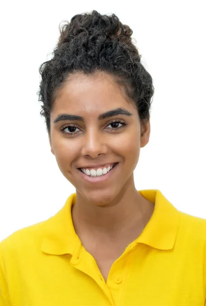

Nuestros Equipos de Investigación
DevTech
Equipo enfocado en el desarrollo de software, especialmente en aplicaciones web y sistemas de información que solucionen problemáticas del entorno académico y social.
Sistema de gestión académica estudiantil
Plataforma web para el seguimiento de calificaciones, asistencia y comunicación entre docentes y estudiantes de la institución.
Aplicación web funcional en producción
Plataforma desplegada y accesible desde cualquier dispositivo, con módulos de notas, asistencia y mensajería interna.
Reducción del 40% en tiempos de reporte
Los docentes reducen el tiempo dedicado al reporte de calificaciones gracias a la automatización de procesos.
Ponencia en jornada de semilleros 2024
El proyecto fue presentado ante la comunidad académica en la jornada regional de semilleros universitarios.
IoT Innovators
Grupo orientado al diseño e implementación de soluciones basadas en Internet de las Cosas (IoT), utilizando sensores, microcontroladores y sistemas automatizados.
Sistema de monitoreo ambiental con IoT
Red de sensores para medir temperatura, humedad y calidad del aire en tiempo real dentro del campus universitario, con panel de visualización en línea.
Prototipo funcional con 5 nodos de sensores
Dispositivos instalados en aulas estratégicas del campus, transmitiendo datos en tiempo real a la nube.
Panel de control web con alertas automáticas
Dashboard que notifica a los administradores ante condiciones ambientales anómalas como alta temperatura o CO₂ elevado.
Artículo publicado en boletín institucional
Divulgación del proyecto y sus hallazgos en el boletín de investigación de la institución, edición segundo semestre 2024.
DataLab
Equipo centrado en el análisis de datos y el uso de inteligencia artificial para la generación de modelos predictivos y soluciones basadas en datos.

Modelo predictivo de deserción estudiantil
Algoritmo de machine learning que identifica estudiantes en riesgo de deserción con base en variables académicas, socioeconómicas y de comportamiento.
Modelo con precisión del 85%
El modelo fue validado con datos históricos reales de la institución, alcanzando un 85% de precisión en la predicción de riesgo de deserción.
Informe de variables clave para bienestar
Se entregó un informe técnico al área de bienestar universitario con los factores de mayor impacto para orientar acciones de intervención temprana.
Participación en congreso regional de ciencia de datos
El equipo expuso los resultados del proyecto en el congreso regional de ciencia de datos universitaria, obteniendo reconocimiento de pares académicos.
TechEdu
Grupo dedicado al desarrollo de herramientas tecnológicas para mejorar los procesos de enseñanza y aprendizaje mediante plataformas digitales e interactivas.
Plataforma gamificada de aprendizaje interactivo
Entorno digital con mecánicas de juego para el aprendizaje de matemáticas y ciencias, dirigido a estudiantes de secundaria en contextos rurales y urbanos.
Plataforma con 6 módulos interactivos
La plataforma fue piloteada con 80 estudiantes de dos instituciones educativas, cubriendo temas de álgebra, geometría y ciencias naturales.
Mejora del 30% en motivación y participación
Encuestas pre y post intervención evidenciaron un aumento significativo en la motivación, participación activa y permanencia en clase.
Reconocimiento en convocatoria de innovación educativa
El proyecto fue seleccionado como destacado en la convocatoria regional de innovación educativa, accediendo a financiación para una segunda fase.